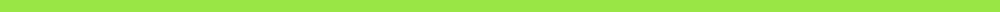

Overall, I found the IRBeast project to be a powerful learning experience. There have been a lot of struggles for myself in my time on this team. I learned how I work best, and I spent time out of my comfort zone, both of which are vital to learning how to succeed in one's life and in the industry.
I struggled a lot on this project, as I was relatively inexperienced with the Codecov implementation that I was trying to work out. Sometimes it felt like I wasn't going anywhere. That said, I did receive some help from other students more experienced with Codecov, and I'm pretty sure that everything they helped me with worked out in the end.
As I said, I learned a lot about how I work best. I found that I need a clear role on a team to be most able to work well. I need some level of guidance, supervision, and a defined plan to succeed in my coding. Luckily, many jobs in the industry have these clear roles and strong visions that lead to well-defined plans. The time I spent out of my comfort zone also told me where my comfort zone is when it comes to coding. I've found that I'm most comfortable in a position where I know what I'm doing and where I'm going next.
I'm glad I was able to learn all of this about myself, as it has helped me to prepare for a future in the industry. That said, I can't help but feel like I was underutilized on this project.
